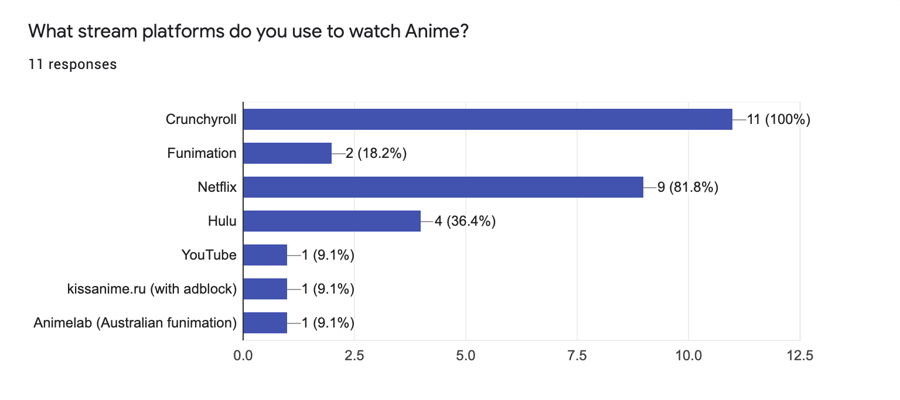

RESEARCH
In my research, I needed to understand the business and how much influence it currently holds in the Anime market. With over 70 million registered users (updated July, 2020), 13 million monthly active users (updated March, 2019), and 3 million paying subscribers (updated July, 2020), Crunchyroll is without a doubt the leading Anime streaming service for western audiences.
Business Goals
Crunchyroll's main forms of revenue is its Premium subscription and online store.
The subscription allows users to watch Anime without advertisements and the ability to watch new episodes one hour after Japanese airing time. In addition, their store
houses many Anime merchandise and other goods.
User Conversion
Their methods of conversion are Anime, Manga, and drama content, SEO, news pages, and mobile games.
Competitive Analysis
Data from my survey mentioned that 18.2% of users also use Funimation, 81.8% also use Netflix, 36.4% also use Hulu, and three responders also use third-party websites.
User Feedback
I conducted an online survey with 14 responders and I asked for their overall experience using Crunchyroll and their personal suggestions for improvement. Feedback requested:
• A UI update, especially the landing page and shows page.
• Dark mode.
• A way to organize their queue/watch lists.
• Filter options to improve the search engine.